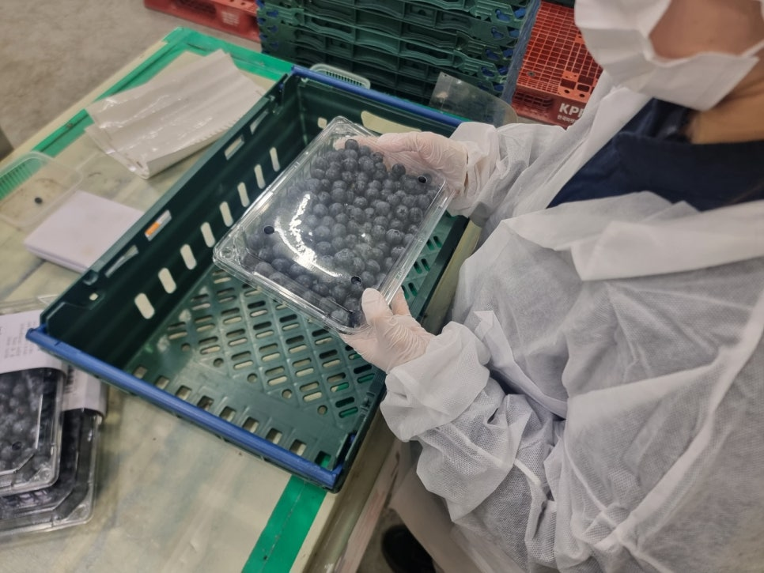
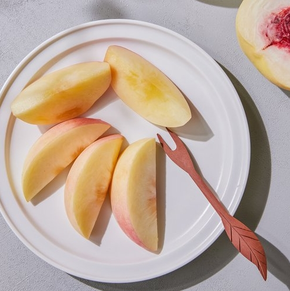
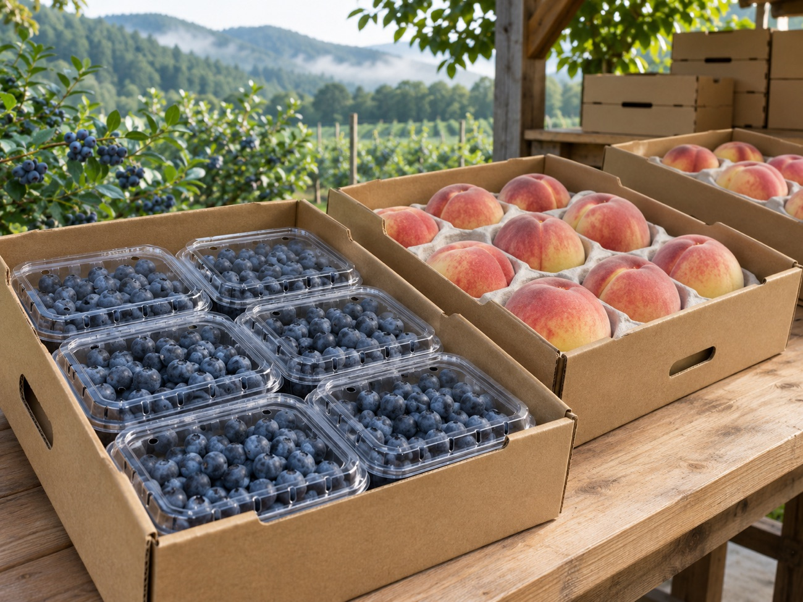

 화순에서 기른 생블루베리 화순 유리온실에서 블루베리를 기릅니다.수확한 열매는 상태를 살펴 선별하고 포장해 제철 생과로 선보입니다. 블루베리 제품 소개 보기↗  설아복숭아와 골든복숭아 설아복숭아와 골든복숭아를 제철에 선보입니다.품종별로 수확 시기가 달라 출하 시점도 달라질 수 있습니다. 설아복숭아 제품 소개 보기↗  수확·출하 소식 수확과 출하 일정은 해마다 달라질 수 있습니다. 최신 소식은 영글어농장 공식 블로그에서 확인해 주세요. 공식 블로그에서 출하 소식 보기↗